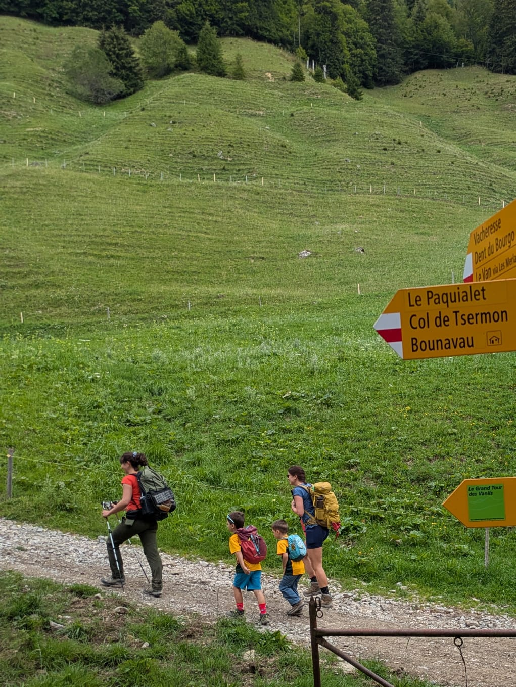
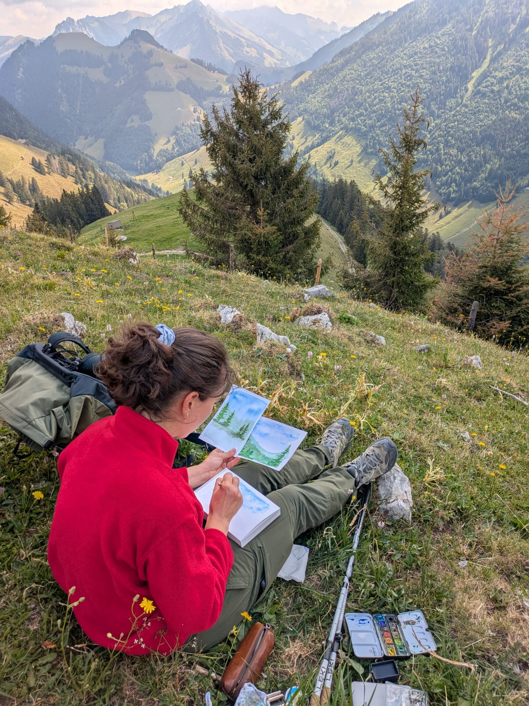
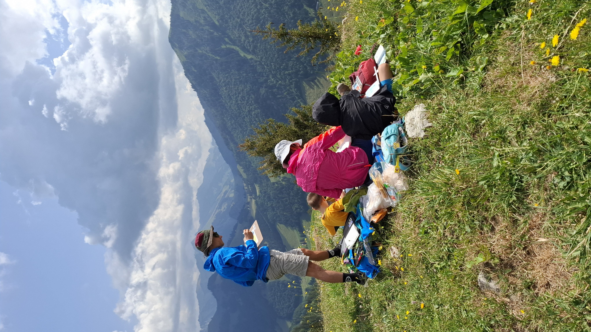
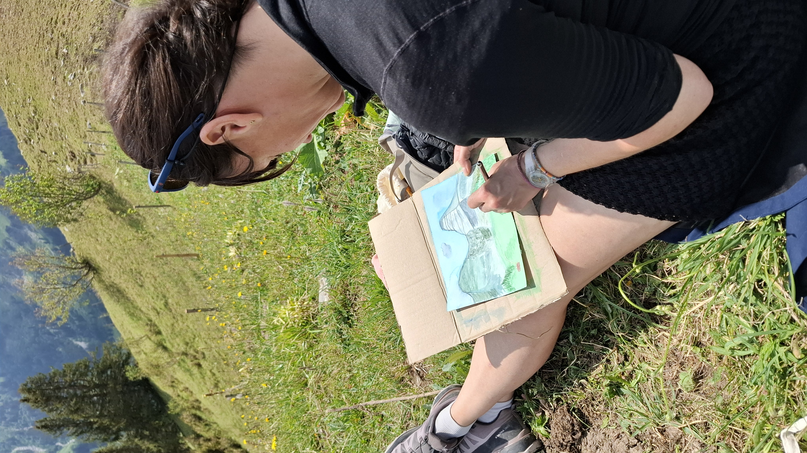
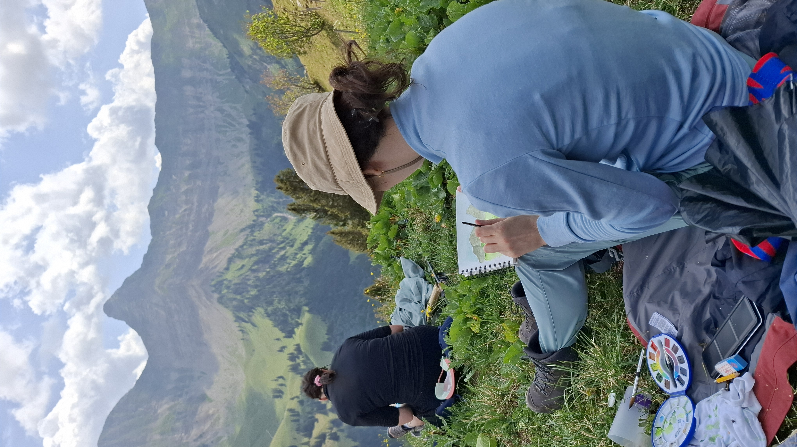
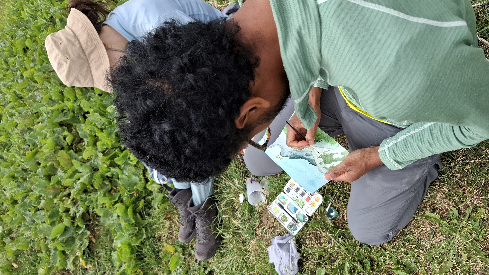
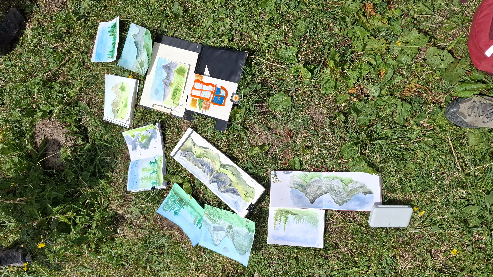
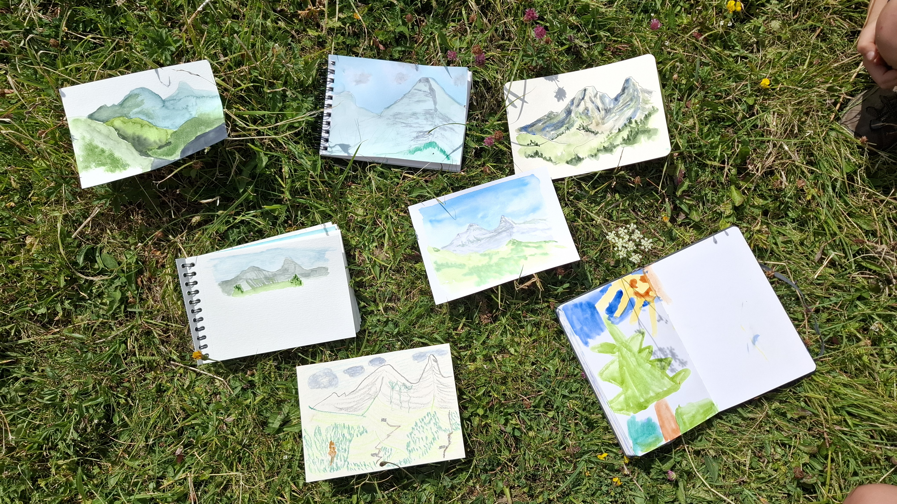

Nous avons échappé au tumulte quotidien dans la vallée du Motélon pour une rando aquarelle des Préalpes fribourgeoises ⛰️
Un joli groupe de petits et grands a découvert la région 🥾 à travers des alpages et du panorama.
Nous avons commencé par chauffer les pinceaux avec un exercice pour peindre les forêts 🌲et je leur ai donné quelques astuces pour peindre les sapins. Ensuite, les participants se sont lancés sur une aquarelle du paysage en face de nous, les fameuses Dent de Folliéran et Dent de Brenleire qui surplombent la vallée par leur majesté. De belles œuvres en ont découlé.
Sur le chemin du retour, un dernier petit exercice attendait les artistes pour conclure la journée 🖌️ Après une belle journée égayée par le soleil, les participants sont repartis avec leurs 3 dessins et de beaux souvenirs 😄







